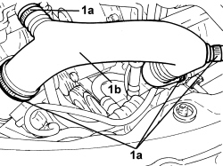

1048A50 TURBOCHARGER AIR INTAKE PIPE - R.R.
- Path
- Procedures > 10 ENGINE > 1048 ENGINE AIR SUPPLY CIRCUIT > 1048A VACUUM AIR CIRCUIT > 1048A50 TURBOCHARGER AIR INTAKE PIPE - R.R.
- Kind
- repair procedure (removal / refitting; the operation number is the code)
- Applies to
- engines: 1.9 JTD 8V, 1.9 JTD 16V, 2.4 JTD 20V; all production periods
- Interactive page
- https://sloeber94.github.io/elrnDB/alfa/159/en/#/939010519
Applies to: engines: 1.9 JTD 8V, 1.9 JTD 16V; all production periods
 Removing
Removing
 Refitting
Refitting
Applies to: engines: 2.4 JTD 20V; all production periods
Topics linked from this page (1)
Topics that link to this page (30)
- 1004B10 POWER UNIT WITH MANUAL GEARBOX - R.R
- 1016C10 SINGLE CYLINDER HEAD - R.R. AND REPLACE GASKET
- 1020D14 FRONT CRANKSHAFT OIL SEAL COVER - R.R AND REPLACE SEALS FOR VERSIONS WITH OIL PUMP ON CRANKSHAFT, TIMING SIDE
- 1020D18 FRONT CRANKSHAFT COVER OIL SEAL - R.R.
- 1020D26 FLYWHEEL SIDE OIL SEAL COVER - R.R AND REPLACE GASKETS
- 1024B10 ENGINE FLYWHEEL - R + R FOR VERSIONS WITH MANUAL GEARBOX
- 1032B10 TOOTHED TIMING BELT - R + R FOR TIMING ADJUSTMENT OR REPLACEMENT
- 1032C42 TIMING BELT TENSIONER SUPPORT - R.R
- 1036L10 CAMSHAFTS IN CAMSHAFT HOUSING - R.R. - INCLUDES CAMSHAFT HOUSING REPLACEMENT IF NECESSARY
- 1036L30 FRONT OIL SEAL FOR CAMSHAFT IN CAMSHAFT HOUSING - REPLACE
- 1060E10 DIESEL INJECTION PRESSURE PUMP - R.R.
- 1060E30 PRESSURE PUMP DRIVE PULLEY - R.R.
- 1060E40 PRESSURE PUMP SUPPORT - R.R.
- 1060G90 SYSTEM CABLE LOOM - R.R.
- 1064A27 TURBOCHARGER UNIT AND EXHAUST MANIFOLD - R.R.
- 1072B10 INLET MANIFOLD - R + R AND REPLACE SEAL
- 1072C44 EXHAUST MANIFOLD HEAT SHIELD - R+R
- 1080B62 CATALYTIC CONVERTER - R + R
- 1084B40 ENGINE OIL DELIVERY PIPE TO TURBOCHARGER - R + R
- 1084B42 ENGINE OIL RETURN PIPE FROM TURBO - R + R
- 1088B20 ENGINE COOLING RADIATOR - R + R
- 1088E10 RADIATOR COOLING FAN - R + R
- 1810A20 CLUTCH - R + R
- 2110A10 MANUAL GEARBOX AND DIFFERENTIAL - R + R
- 4130B20 POWER STEERING PUMP - R.R.
- 4130B31 ONE POWER STEERING PUMP SUPPLY PIPE INTERMEDIATE RIGID JOINT R R
- 4130B36 SUPPLY PIPE FROM FLUID RESEVIOR TO POWER STEERING PUMP INLET PIPE R R
- 4130B38 POWER STEERING PUMP INLET PIPE FROM FLUID RESEVIOR PIPE OR INTERMEDIATE RIGID PIPE R R
- 4130B40 SUPPLY PIPE FROM PUMP TO POWER STEERING BOX - R.R.
- 4130B52 HEAT EXCHANGER PIPE - R+R